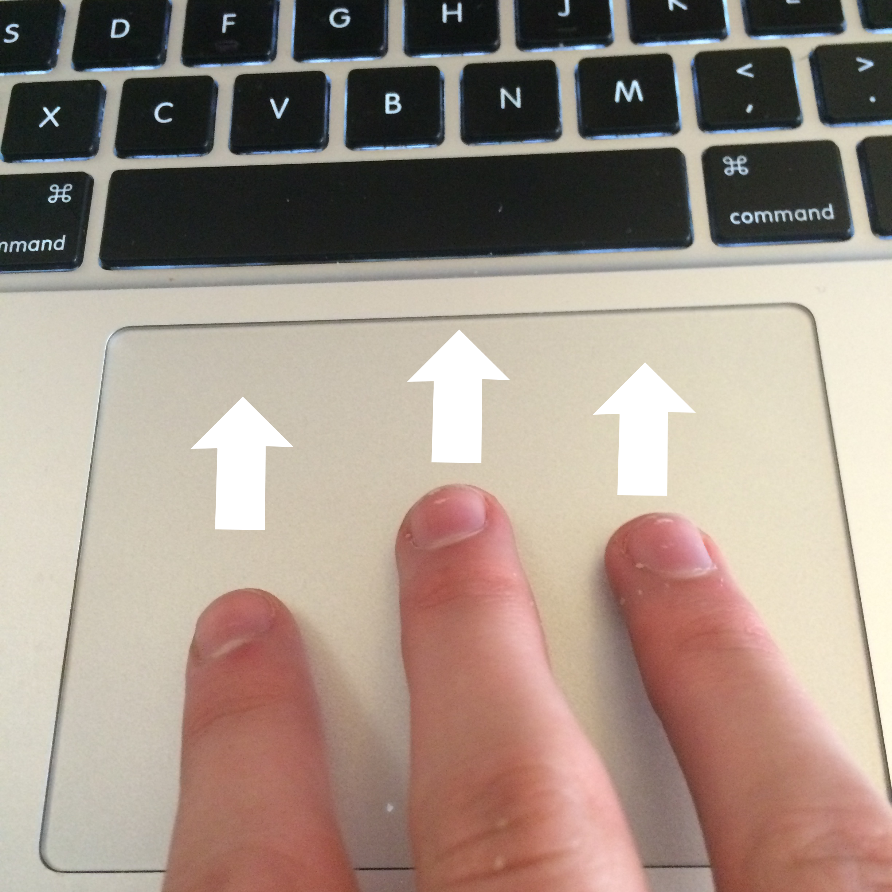

|
Designers have to take gestures into account especially when designing a product which involves interaction with people. If a User Interface designer is designing an app for the iPhone, they must consider the users finger placements and gestures, so they know the app will be ergonomic and easy to use. They must investigate and research this to find trends and common universal gestures. An example of where this has been implemented is on Apples Macbook Pro. The trackpad on this computer allows for many gestures that accomplish different tasks, including: 3 fingers swiping forward allows the user to see all their desktops open at once. Designers not only have to consider hand gestures they also must a very good use of them when orally and physically presenting ideas to clients. Research shows that the areas of our brain for hand communication and oral communication are approximately in the same region which is why hand gestures are so important in presenting. |
|  |

|

|

|
Considering and implemementing technology to adapt to hand gestures is one thing but actually using them as a tool to advance the reality of a users experience. Microsoft is devloping technology such as this. This technology gives massive advantage to the ever expanding virtual reality world. "Handpose, a new innovation by Microsoft Research, could make all that possible, giving computers the ability to accurately and completely track the precise movement of your hands through a Microsoft Kinect, right down to the finger wiggle" This invention not only proves what I have been saying but it also shows real life uses of this interaction.